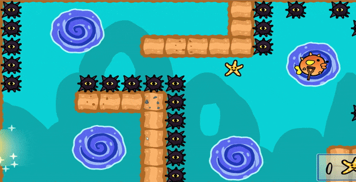

C# | Unity | Gamejam | Gameplay Features | Tools
Winner of the TGA / King Gamejam 2019 award for the most inspiring casual mobile game pitch inviting the jury to want to invest in the game and especially the passion for the team behind the game.
Old Puffer was a game created during the King and The Game Assembly's gamejam collaboration. The game was created in Unity with the theme of creating a casual game. The gamejam was held from 17:00 on Friday to 11:00 on Sunday between the 25-27th of January 2019. After the game was finished at eleven, we all made our pitches for the game, resulting in our game pitch being the winner!
We were a group of four guys, where Alexander and I as programmers. Olof was the graphical artist and Peter finalizing our crew as the level designer.
I did most of the feature coding; adding the bubbles, maelstroms, finish line and transitioning between the levels. I worked on the UI of the game as well, implementing the menu UI andI also created a prefab for the tutorial boxes, allowing Peter to place them whenever needed. After killing my ears late Saturday night trying to find sounds on freesound.org, I added all the necessary sounds as well.
The bubbles were the first feature in the game that would aid the movment of Old Puffer. When Old Puffer hit the bubbles' collider, the old fish would get sucked into them and transported around between the bubbles two transportation points.
Whenever the player would swipe on the screen, Old Puffer would move in the swipe direction and be released from the bubble.
The picture above is the prefab of the bubble. The bubbles were visualized in the editor with two bubbles, the brighter one being the start point, with the paler one being the second point of movement.
The easiest way to make sure that Old Puffer moved with the bubbles would be to set the bubble as Puffers parent object. The players movement would temporarily disabled until Puffer the coroutine to "suck" Puffer to the center of the bubble was done.
The bubbles also subscribed to a death event when holding Puffer, making sure to release control of Puffer and resetting variables.
I used a coroutine function to handle the sucktion of Puffer. I find them clean to use and easy to handle. They were also fast to use and iterate with, perfect for the gamejam. I lerped the movement to the center, pleased when the fraction was close enough.